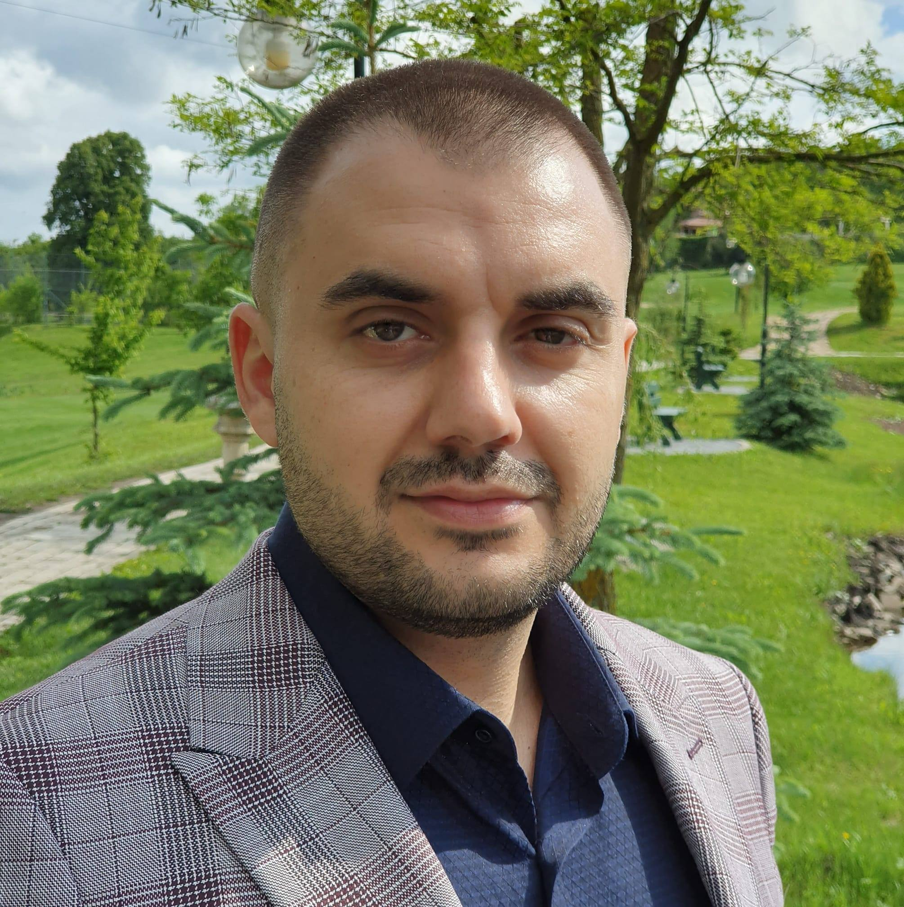

>Home |
CV |
Learn a New Skill |
Hobbies |
>Home |
CV |
Learn a New Skill |
Hobbies |
|  |
Vasile Stanciu-PetroviciEngineer My WebsiteLinkedIn I like Tech, Sports and Physics. I ❤️ Games and Anime. Where I liveCluj-NapocaRomania. |
| Dates | Work |
|---|---|
| 2007-2008 | Quality Assurance@CognizantSoftvision |
| 2008-2009 | Quality Assurance@Xoomworks |
| 2010-2013 | Business Analysis@CognizantSoftvision |
| 2013-present | QA & Leadearship@CognizantSoftvision |
| Quality Engineering | ⭐️⭐️⭐️⭐️⭐️ |
| Development | ⭐️⭐️ |
| Soft Skills | ⭐️⭐️⭐️⭐️ |
| Ticketing | Jira ∗∗∗∗ Bugzilla ∗∗∗∗ TFS ∗∗∗ |
| Test Case Management Tools | Quality Center ∗∗∗ Redmine ∗∗∗ Testrail ∗∗∗ |
| Methodologies | Waterfall ∗∗ Scrum ∗∗∗∗∗ Kanban ∗ |
| Scripting | JS ∗∗ GScript ∗∗ Bash ∗∗∗ |
| Programming | Java ∗ Ruby ∗ C# ∗ c & c++ ∗∗ |
| Network traffic tools, proxies | Wireshark ∗∗∗ ODO ∗∗∗∗ Charles ∗∗∗ |
| Operating Systems | Windows ∗∗∗∗∗ MacOS ∗∗∗∗∗ Ubuntu ∗∗∗ CentOS ∗ Debian ∗ |
| API tools | Postman ∗∗∗ Jmeter ∗ |
| DBs | MySQL ∗∗ Postgress ∗∗ |
| Devops | LEMP and LAMP ∗∗ Security ∗∗ SSH ∗∗ cron ∗∗ KPI reports ∗ |
Write test cases
Write test suites
Write test plans
Learning and succesfully automating things
Execute all of the above
Follow company ISO's like 9001 and 27001 while alligning to client expectactions
Report to clients
Communicate and establish relationships with international teams both QA and Dev
Travel and meet clients / work onsite
Learn various tech stacks
Working alone and in large teams
Learning to use the tools of the trade for the given project context
Enjoying building awesome solutions and products
Working on a daily basis with clients to understand their needs
Translating client needs into clear epics stories and techinical tasks
Working on desigs in Paint.net
Closely working with Dev and QA teams to explain requirements
Communicate back to the client estimations, explaining technical stuff in a way that they understand our teams effort
Analysis of old code and databeses in order to help understand existing flows
Collaborate with Project Managers, QA Leads and Architects in order to optimize flows
Teaching others from my experience on:
- Test cases
- Test plans
- tools
- Environment setups
- Tech stacks
- Scripting
- Problem solving
- Handling outstanding requests
- Communitcation within the team, with exterternal teams and with clients
Escalations to upper management of exceptional situations both project related and team mates related
Working on side project for Company and Community benefits
Taking interviews
Driving Continous Personal Development processes for my team mates
Motivating team members to succeed
Motivating upper management to fire team mates
Building client trust by doing all of the above
Growing teams by promoting my teams constant good results
Supporting my team mates career wishes and actively helping them to get where they want
Building a network of higly skilled professionals that can rely on my advice and help and trusting they can do the same for me